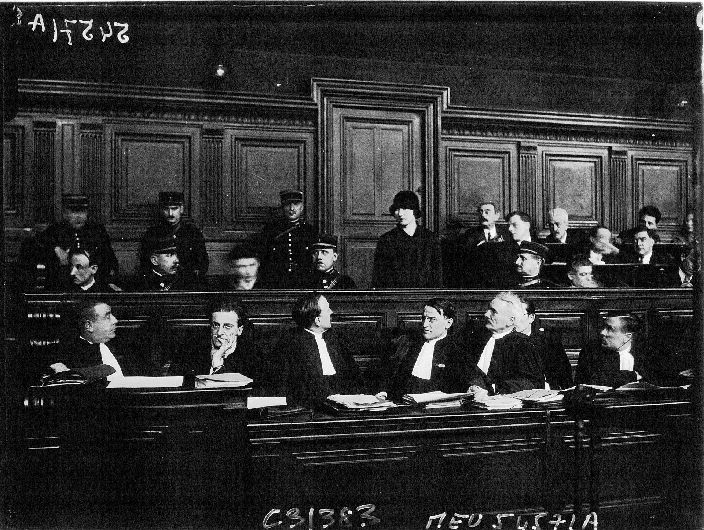

Chapter 22
The Republic Absorbs the Failure
A clerk in the Ministry of Finance’s Bureau of Lotteries and Public Borrowing pressed his stamp to the cover of a bound report and carried it down the corridor to the archives. There he shelved it beside the circulars that had authorized the Compagnie Universelle’s lottery bonds six years earlier: the final report of the Chamber of Deputies’ Panama Canal inquiry, filed on 19 January 1894. Returning to his desk, he entered the filing date in a register. No annotation distinguished the report from any other parliamentary inquiry.
On the same day, at Colón on the Isthmus of Panama, a French liquidator’s assistant was counting rusting dredges in a yard near the canal entrance. The inventory listed locomotives, excavators, rail cars, and machine tools abandoned when the Compagnie Universelle’s liquidation had suspended operations five years earlier. The tropical humidity had already corroded the moving parts. The inventory was being compiled for a sale that no buyer had yet been found.
The contrast was exact. In Paris, procedure had reached its terminus. On the isthmus, the physical residue of failure sat under equatorial rain, unclaimed and decaying. The Republic had closed its legal file. The isthmus had not.
The verdicts of 1893 did not close the Panama affair; they converted it into a permanent feature of French public life. The courtroom had emptied. Ferdinand de Lesseps and his son Charles had been convicted of breach of trust. Gustave Eiffel had been convicted of corruption. Former ministers had been questioned. The judicial machinery had processed what it could and stopped. But the Republic’s absorption of the failure was only beginning.

The mechanism ran from verdict to institution. Because the trial had established that the company’s collapse was entangled with public authorization, the state could not simply return to its prior posture. The Chamber’s inquiry had made the entanglement a matter of record. The Ministry of Public Works had lent the Compagnie Universelle its engineers; the Ministry of Finance had authorized its lottery bonds in 1888; successive governments had endorsed the venture with their prestige. These were documented facts, not rumor. The procès-verbal of the inquiry’s proceedings, published in the Journal Officiel, placed them before every deputy and every newspaper reader in France.
The administrative response was immediate and procedural. In the weeks following the verdicts, the Ministry of Finance issued revised internal circulaires governing the authorization of public lotteries. These directives tightened the criteria under which a private enterprise could receive state authorization to issue lottery bonds. They required more detailed financial disclosures from applicants. They mandated that the authorizing ministry retain and review periodic reports on the issuer’s actual expenditures against its prospectus projections. The circulaires did not ban lottery bonds. They did not abolish the mechanism that had funded the Compagnie Universelle’s final and most desperate capital campaign. They narrowed it.
The tightening was specific. Where the 1888 authorization for the Panama lottery bonds had been granted on the basis of the company’s declared projections and the prestige of its founder, the new guidelines required independent verification of the applicant’s engineering feasibility studies, its capital structure, and its expenditure rate. The Bureau of Lotteries was instructed to consult the Ministry of Public Works before granting any authorization involving infrastructure projects. The instruction was bureaucratic. Its effect was structural. The Compagnie Universelle had received its lottery authorization because Ferdinand de Lesseps’s name had made verification seem unnecessary. The new rules made that path impossible.
The Chamber’s own procedures shifted. The Panama inquiry had been conducted by a commission of thirty-three deputies with subpoena power, witness testimony, and access to company documents. The commission’s work had demonstrated that parliamentary scrutiny could expose the internal operations of a private company that had received state authorization. The precedent was noted. In the session of 1894, standing committees of the Chamber began adopting more rigorous protocols for examining government-backed ventures. Ministers who appeared before finance committees were now asked not only about public expenditures but about the financial health of any private enterprise that operated under state license or authorization.
The precedent that ministers could be questioned about private ventures they had endorsed was not new in principle. It was new in practice. Before Panama, a deputy who asked a minister about the financial condition of a company that held a state concession risked being told that the matter was private. After the inquiry’s published record showed how thoroughly the public and private spheres had been entangled in the Compagnie Universelle’s case, that answer was no longer available. The inquiry had established, in documented detail, that the state’s authorization of lottery bonds was itself a form of public action. A minister who signed it was acting in an official capacity. His endorsement was a matter of public record. Its consequences were a legitimate subject for parliamentary interrogation.
This redefinition of the boundary between private enterprise and public guarantee was the scandal’s lasting institutional product. It was procedural rather than punitive. It outlasted every individual it punished. Ferdinand de Lesseps would die in December 1894, his sentence never served, his conviction standing but his person beyond reach. Charles de Lesseps would be released from prison and would spend his remaining years managing the liquidation’s remnants. Eiffel would be pardoned. The ministers who had been questioned would return to public life or retire into private one. The individuals were processed and discharged. The procedures they had provoked remained.
The Republic absorbed the failure within a political atmosphere of retrenchment. The year 1893 had brought both the Panama verdicts and the anarchist Auguste Vaillant’s bombing in the National Assembly on 9 December. Vaillant had thrown a bomb from the visitors’ gallery, injuring several deputies. The Chamber responded by passing the restrictive lois scélérates, which curtailed the freedom of the press laws of 1881 and expanded the state’s power to prosecute anarchist publications and political dissent. The Republic was rocked by the sudden but short-lived Boulanger crisis only four years earlier, in 1889, and the Panama scandal had followed it in close sequence. The Republic had faced a general who threatened to march on the Élysée, a bomb that had exploded in its legislature, and a financial scandal that had reached into its ministries. The state’s response to each was defensive and procedural. It fortified itself.
The atmosphere shaped the absorption. The Panama scandal’s exposure in the press, followed by the security laws passed in response to Vaillant’s bombing, created a context where the state’s response to institutional failure was necessarily both corrective and self-protective. The revised lottery guidelines and the new committee procedures were corrective: they addressed the specific vulnerabilities the scandal had exposed. The lois scélérates were self-protective: they addressed a broader perceived threat to the Republic’s stability. Together, they defined a state that was simultaneously reforming and retrenching, absorbing the lessons of failure while fortifying itself against the political forces that had exploited it.
The Republic’s political culture in this period was marked by a series of confrontations that tested the boundary between state authority and private domain. The abolition of chaplains in the armed forces and the removal of nuns from hospitals had been fiercely opposed, as France was mainly Roman Catholic. The Republic had already been pressing this boundary before Panama. The canal scandal gave it a new axis. The entanglement of public authorization with private enterprise was, in its structure, analogous to the entanglement of public authority with religious institutions. In both cases, the Republic was drawing lines. In both cases, the drawing was contested.
The liquidator’s inventory at Colón provided the material counterweight to the procedural absorption in Paris. The inventory was a financial document. It listed assets, estimated their remaining value, and projected their potential sale price. The numbers told a story that the Parisian proceedings had not fully addressed. The Compagnie Universelle had raised approximately 1.4 billion francs. It had spent nearly all of it. What remained on the isthmus was a collection of earthworks, machinery, and infrastructure that the liquidator valued at a fraction of the capital expended.
This was the ledger’s final turn. The financial accounting that had displaced engineering judgment as the primary way the project knew itself had reached its terminus. The liquidator’s inventory was the last act of that displacement. It converted the isthmus from a construction site into a balance sheet entry. The Culebra Cut, which had consumed millions of cubic meters of excavation and hundreds of lives, was now a line item. The hospitals at Colón and Panama, where the death registers had recorded the names of workers who had died of yellow fever and malaria, were now real estate. The dredges that had been purchased, shipped, assembled, operated, and abandoned were now scrap metal priced by the ton.
The inventory’s purpose was liquidation. The liquidator was preparing the assets for sale. The sale would close the Compagnie Universelle’s books. It would also transfer the physical residue of the French failure to whatever purchaser could be found. The inventory did not speculate about who that purchaser might be. It listed what existed. It estimated what it was worth. It waited.
The American diplomatic presence in the region was expanding. The increasing importance of the United States in world affairs was reflected in the act of Congress in 1893 which raised the rank of the most important diplomatic representatives abroad from minister plenipotentiary to ambassador. The American minister to the Central American states had previously held a lower rank. The act elevated the position to envoy extraordinary and plenipotentiary. The change was procedural. Its significance was strategic. The United States was formalizing its diplomatic engagement with the region through which the French canal had been intended to pass.
The American attention to the isthmus was not new. The United States had maintained an interest in an interoceanic canal since the Clayton-Bulwer Treaty of 1850. The French venture had, for a decade, displaced American consideration of the route. The French failure had reopened it. The liquidator’s inventory at Colón was, from an American perspective, a catalogue of assets that might be acquired at a discount. The French excavations, the machinery, the surveys, the railroad — all of it was for sale. The price would be determined by the absence of competing buyers and by the liquidator’s obligation to close the books.
The Republic’s absorption of the Panama failure was, in this sense, incomplete. It could process the legal consequences. It could revise its procedures. It could tighten its lottery regulations and expand its committee scrutiny. It could draw sharper lines between public authorization and private speculation. What it could not do was reclaim the physical assets that the failure had left on the isthmus. Those assets belonged to the liquidation. The liquidation would sell them to whoever would buy. The Republic had no mechanism for retaining them. It had no policy for their disposition. It had no minister who would propose that the French state purchase the remnants of a venture whose collapse had just been prosecuted in French courts.
The political will to retain the isthmian assets did not exist. The Compagnie Universelle’s collapse had discredited the Panama route in French public opinion. The trial had reinforced that discredit. The men who had been convicted were associated with the route itself, not merely with the company. The Culebra Cut and the Chagres basin were, in the French political imagination, the site of a scandal rather than the site of a future canal. The Republic could not absorb the physical project because it had absorbed the failure as a political fact. The failure was now a feature of French public life. The project was an embarrassment.
The procedural changes the Republic adopted were real and durable. They represented a genuine institutional learning. The state had recognized that its authorization powers — over lotteries, over concessions, over public works — carried responsibilities that extended beyond the moment of authorization. The inquiry had shown that the Ministry of Finance’s authorization of the lottery bonds in 1888 had been granted without independent verification of the company’s financial condition. The new circulaires addressed that gap. The standing committees’ new protocols addressed the corresponding gap in legislative oversight. These were concrete, specific, and verifiable changes.
But the procedural learning was also a form of displacement. The Republic absorbed the scandal by processing it through procedures. It converted a question about whether the French state should build a canal into a question about whether ministers should verify lottery bond applications. The conversion was necessary and legitimate. It was also, in its own way, a form of avoidance. The larger question — whether the isthmian route was viable, whether a sea-level canal was possible, whether the Chagres River could be managed — was not addressed by the procedural reforms. Those questions belonged to engineers and to the physical site. The Republic’s procedures could not answer them. They could only ensure that, if someone else tried, the authorization process would be more careful.
The liquidator’s inventory at Colón was the physical site’s answer to the Republic’s procedural absorption. The inventory said: here is what remains. Here is what the 1.4 billion francs produced. Here is the Culebra Cut, partially excavated. Here are the dredges, rusted. Here is the railroad, still operating but carrying no freight. Here are the hospitals, empty. Here are the surveys, filed. Here is the route, still there, still requiring a canal that the French state will not build.
The inventory was a bridge. It connected the French failure to whatever came next. It was the concrete evidence that the failure had not erased the project. It had merely transferred the project’s ownership from a company that could not complete it to a liquidation that could not retain it. The transfer was already underway. The liquidator was preparing the sale. The sale would convert the French excavations from a liability into an asset — someone else’s asset.
The Republic’s procedural absorption had, paradoxically, made this transfer easier. By disentangling public authorization from private enterprise, the Republic had also disentangled itself from the isthmian route. The state had no claim on the Compagnie Universelle’s assets. It had no policy for the canal’s completion. It had no institutional mechanism for retaining the excavations. The liquidation was a private matter. The assets would be sold to a private buyer. The Republic would have no role.
The American interest in the isthmus was not yet a purchase. It was an attention. The act of Congress in 1893 that raised the diplomatic rank was a signal, not a bid. But the signal was directed at a region where the only existing canal works were French, and those French works were being inventoried for sale. The American minister’s elevated rank gave him the authority to negotiate. The liquidator’s inventory gave him the catalogue.
The Republic had absorbed the failure. It had not absorbed the project. The failure was now a set of procedures, a set of revised guidelines, a set of committee protocols, a set of legal precedents. The project was a set of excavations, a set of machines, a set of surveys, a set of maps. The failure belonged to France. The project was for sale.
The confidence capital that the Compagnie Universelle had generated — the financial and political resource it had created by converting Ferdinand de Lesseps’s reputation and the Republic’s prestige into investable funds — had been spent. It had been spent on excavation, on machinery, on wages, on medical supplies, on lottery bond interest payments, on administrative overhead, on newspaper advertising, on the salaries of engineers and clerks and guards. The spending had produced a partially excavated cut, a collection of rusting machines, and a set of surveys that accurately described the terrain through which a canal could, with different engineering and different medicine, be built.
The liquidator’s inventory revalued that spending. The ledger turn that had begun when the company’s financial statements became the primary way the project understood its own position reached its conclusion in the liquidation. The inventory was the final accounting. It converted the project’s achievements and its waste into a single number: the estimated sale value of the assets. That number was a fraction of the capital expended. It was also, for a potential buyer, a discount on the cost of starting fresh.
The Republic’s procedural absorption and the liquidator’s inventory were parallel processes. They ran simultaneously. They addressed different aspects of the same failure. The procedural absorption addressed the institutional question: how had the Republic allowed this, and how could it be prevented? The inventory addressed the material question: what remained, and what was it worth? The two processes did not intersect. The Republic’s revised circulaires did not mention the liquidation. The liquidator’s inventory did not reference the revised circulaires. They were separate tracks, converging on the same fact from different directions.
The fact was this: the French state had absorbed the scandal as a set of institutional lessons, and the French company’s assets were being prepared for sale to whatever buyer would take them. The lessons would shape French regulatory practice for decades. The assets would shape whoever bought them.
The standing committees’ new protocols for examining government-backed ventures were adopted without fanfare. The revised lottery circulaires were issued as internal directives. The legal file was closed. The political and financial structures that had enabled the disaster had been modified but not dismantled. The lottery bond mechanism still existed. The authorization powers still rested with the same ministries. The standing committees still operated under the same chamber rules. The modifications were incremental. They tightened the existing system rather than replacing it. The machine was still intact. It had been adjusted.
The adjustment was the Republic’s way of absorbing failure without confronting it. The procedural reforms said: we will be more careful next time. They did not say: there will be no next time. They did not say: the state will never again authorize a private venture of this scale. They said: the authorization process will be more rigorous. This was the Republic’s institutional answer to a question that the trial had posed but could not answer judicially. The trial could determine who was responsible. It could not determine what responsibility required.
The Republic’s answer was procedural. The answer was durable. It would outlast the convicted men, the liquidation, the inventory, and the scandal itself. It would become a permanent feature of French public life — not the scandal, but the habits of scrutiny it had instilled. Ministers would be questioned. Authorizations would be verified. Lotteries would be regulated. The boundary between public guarantee and private risk would be drawn more sharply. These were the lasting products of the Compagnie Universelle’s failure.
The liquidator at Colón completed his inventory. The document listed 2, 148 separate items, from dredges to rail spikes. It estimated the total remaining value at approximately 100 million francs. The capital expended had been 1.4 billion. The discount was stark. The inventory was forwarded to the liquidation’s offices in Paris. It was placed in a file alongside the company’s engineering reports, its financial statements, and its correspondence with the Ministry of Public Works. The file was available for inspection by any party with a legitimate interest in purchasing the assets.
The American legation in Central America had, by 1894, a minister with the rank of envoy extraordinary and plenipotentiary. The minister had instructions to monitor political developments in the region. The region included the Isthmus of Panama, where a French liquidator had just completed an inventory of canal assets valued at a fraction of their original cost. The assets included excavations, machinery, surveys, and a railroad. They were for sale.